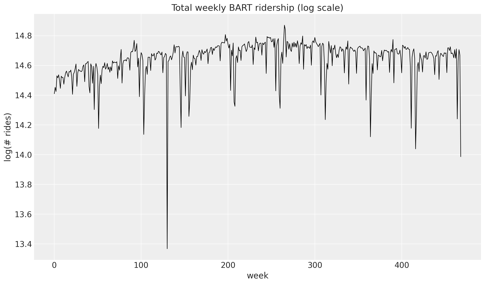
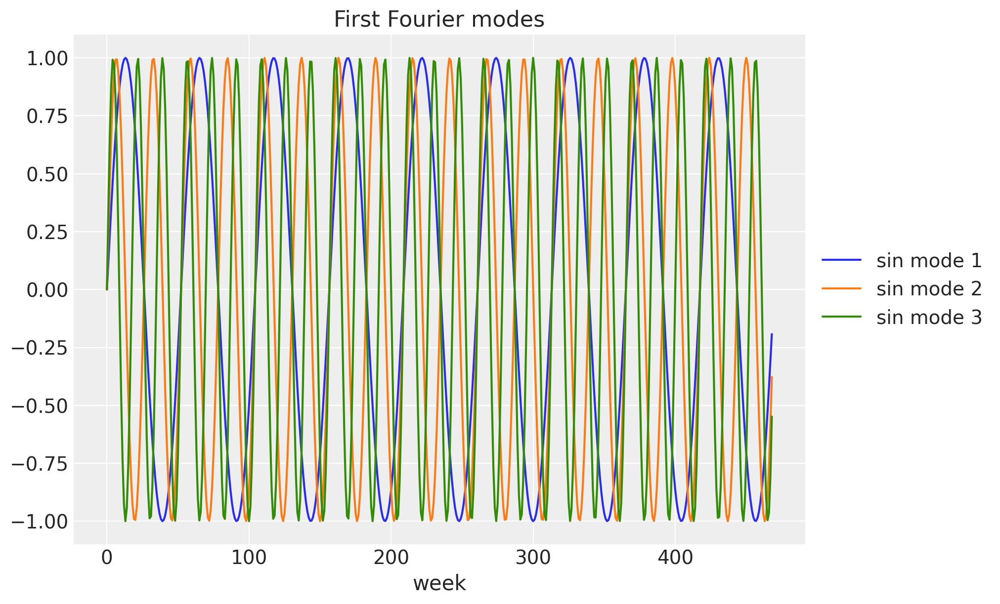
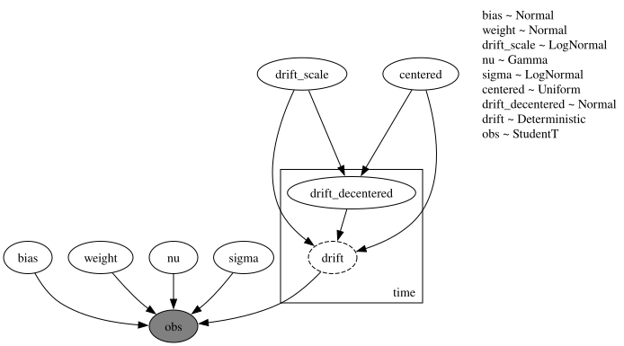
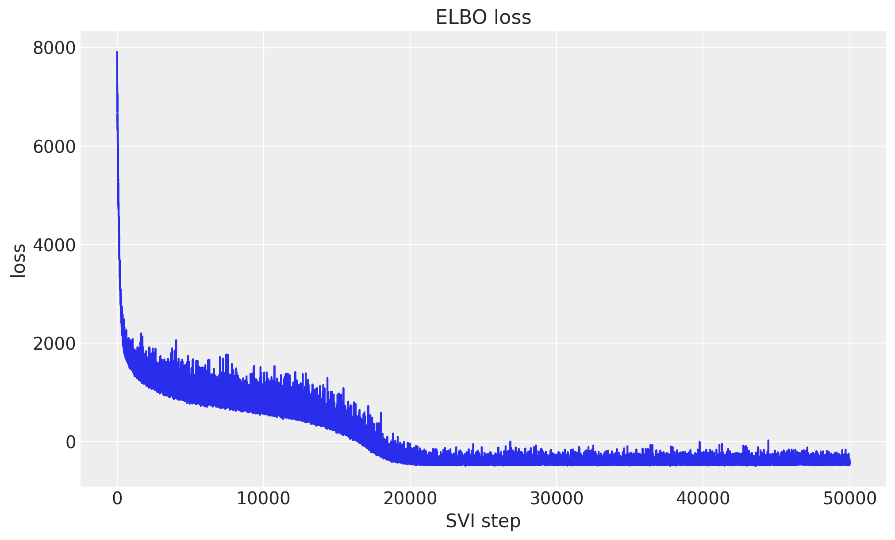
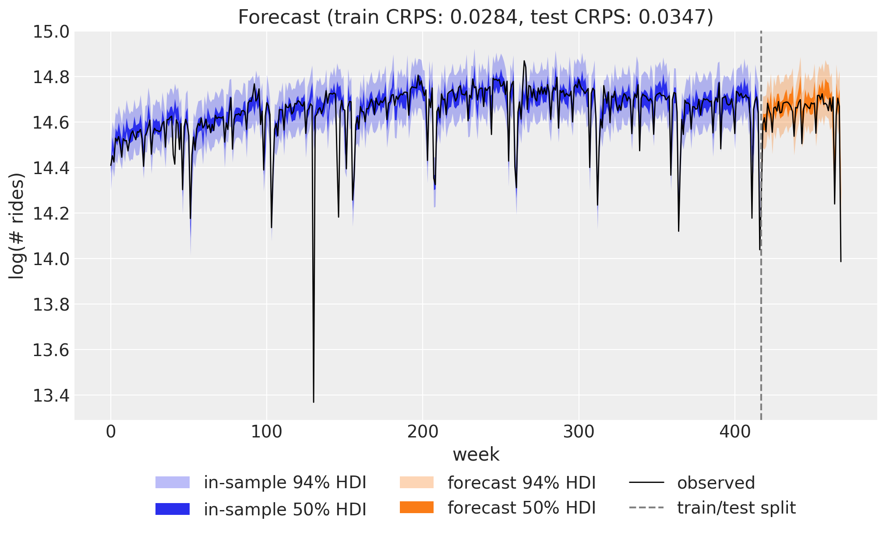
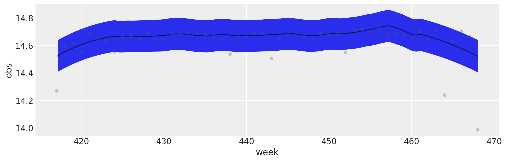

%load_ext autoreload
%autoreload 2
%load_ext jaxtyping
%jaxtyping.typechecker beartype.beartype
%config InlineBackend.figure_format = "retina"
import arviz as az
import jax.numpy as jnp
import matplotlib.pyplot as plt
import numpy as np
import numpyro
import numpyro.distributions as dist
import xarray as xr
from jax import random
from numpyro.infer import Predictive
from numpyro.infer.reparam import LocScaleReparam
from numpyro.optim import Adam
from numpyro_forecast import Forecaster, ForecastingModel, eval_crps
from numpyro_forecast.datasets import load_bart_weekly
from numpyro_forecast.typing import Array
from numpyro_forecast.util import fourier_features
az.style.use("arviz-darkgrid")
plt.rcParams["figure.figsize"] = [12, 7]
plt.rcParams["figure.dpi"] = 100
plt.rcParams["figure.facecolor"] = "white"
numpyro.set_host_device_count(n=4)
rng_key = random.PRNGKey(seed=42)Univariate forecasting with numpyro_forecast
This notebook ports the blog post Univariate time series forecasting with NumPyro (itself a port of Pyro’s forecasting tutorial) to the numpyro_forecast package. We forecast weekly BART ridership with a random-walk local level, Fourier seasonality and a Student-T likelihood, fit by SVI, and evaluate with CRPS.
Instead of hand-writing the NumPyro model and a bespoke prediction loop, we subclass numpyro_forecast.forecaster.ForecastingModel and let Forecaster handle the fit-once / forecast-any-horizon mechanics (the forecast horizon is drawn from separate _future latent sites, so the variational guide is never resized).
Visualizations use ArviZ >= 1.0 (az.hdi + fill_between for the multi-band predictive checks, az.plot_lm for the forecast-vs-observed panel).
Note on reproducibility. We match the blog’s data, seed, optimizer and step counts. Results reproduce the blog’s behavior and CRPS magnitude but are not bit-for-bit identical: the forecast horizon uses the package’s separate-
_future-site mechanism (rather than re-running the guide over the full covariates), and the seasonal design uses fourier_features, an equivalent Fourier basis.
Prepare notebook
In [1]:
Read data
We work with total weekly BART ridership: hourly counts summed over all origin-destination pairs and aggregated into non-overlapping weeks. The series grows roughly multiplicatively, so we model it on the log scale, where the trend and the seasonal swings are closer to additive. Throughout the package, time lives at axis -2 and the observation dimension at axis -1, so a single series has shape (weeks, 1).
In [2]:
data = load_bart_weekly() # (weeks, 1), log scale
duration = data.shape[0]
print("data shape:", data.shape)
fig, ax = plt.subplots()
ax.plot(np.asarray(data[:, 0]), color="black", lw=1)
ax.set(
title="Total weekly BART ridership (log scale)",
xlabel="week",
ylabel="log(# rides)",
);data shape: (469, 1)
Train-test split
We hold out the last 52 weeks (one full year) as the test set and train on the preceding 417 weeks. Keeping a whole year out means the test window covers a complete seasonal cycle, which is exactly where a seasonal model can over- or under-fit.
In [3]:
T0 = 0
T2 = duration # 469
T1 = T2 - 52 # 417: train / test split
y_train = data[T0:T1]
y_test = data[T1:T2]
time = np.arange(T2)
time_train = time[T0:T1]
time_test = time[T1:T2]
print("train:", y_train.shape, "test:", y_test.shape)
fig, ax = plt.subplots()
ax.plot(time_train, np.asarray(y_train[:, 0]), color="C0", label="train")
ax.plot(time_test, np.asarray(y_test[:, 0]), color="C1", label="test")
ax.axvline(T1, color="gray", ls="--", label="train/test split")
ax.legend()
ax.set(title="Train / test split", xlabel="week", ylabel="log(# rides)");train: (417, 1) test: (52, 1)
Seasonal features
To capture the annual cycle we use a Fourier design matrix: 26 harmonics (so 52 sine and cosine columns) at a period of 365.25 / 7 weeks. Each harmonic is a sine/cosine pair at a multiple of the base frequency, and a weighted sum of them can approximate any smooth periodic shape. This spans the same subspace as the blog’s periodic_features, so paired with the Normal(0, 0.1) weight prior the regression is equivalent. The plot below shows the first few low-frequency modes.
In [4]:
num_terms = 26
covariates = fourier_features(duration, period=365.25 / 7, num_terms=num_terms)
covariates_train = covariates[T0:T1]
print("covariates shape:", covariates.shape)
fig, ax = plt.subplots()
for k in range(3):
ax.plot(np.asarray(covariates[:, k]), label=f"sin mode {k + 1}")
ax.legend()
ax.set(title="First Fourier modes", xlabel="week");covariates shape: (469, 52)
Model specification
The idea is a local level model with seasonality. The mean has three parts: a global bias, a random-walk level \(\ell_t\) that lets the baseline drift slowly over time, and a Fourier regression for the annual cycle. The level moves by small Gaussian increments (the drift), so it can follow long-term changes without being told their shape in advance. For the likelihood we use a Student-T instead of a Normal: its heavy tails make the model robust to the occasional outlier week.
\[ \mu_t = \text{bias} + \ell_t + w^\top x_t, \qquad \ell_t = \ell_{t-1} + \delta_t, \qquad \delta_t \sim \mathcal{N}(0, \sigma_\text{drift}), \] \[ y_t \sim \text{StudentT}(\nu, \mu_t, \sigma). \]
We subclass ForecastingModel and write the generative story in model. The level is the cumulative sum of drift, which we sample with self.time_series(...) (the package’s equivalent of the blog’s scan over time). The single call to self.predict(...) registers the zero-centered Student-T noise around the predicted mean, and it is also what wires up the train-vs-forecast machinery: in-sample steps are observed, while the forecast horizon is drawn from separate _future latent sites so the variational guide never changes shape. Finally, a LocScaleReparam on the drift switches between centered and non-centered parameterizations, which helps the SVI geometry quite a lot.
In [5]:
class UnivariateForecaster(ForecastingModel):
"""Local level + Fourier regression with Student-T observations."""
def model(self, zero_data: Array | None, covariates: Array) -> None:
"""Define the univariate forecasting model."""
num_features = covariates.shape[-1]
bias = numpyro.sample("bias", dist.Normal(0.0, 10.0))
weight = numpyro.sample("weight", dist.Normal(0.0, 0.1).expand([num_features]).to_event(1))
drift_scale = numpyro.sample("drift_scale", dist.LogNormal(-20.0, 5.0))
nu = numpyro.sample("nu", dist.Gamma(10.0, 2.0))
sigma = numpyro.sample("sigma", dist.LogNormal(-5.0, 5.0))
centered = numpyro.sample("centered", dist.Uniform(0.0, 1.0))
drift = self.time_series(
"drift",
lambda: dist.Normal(0.0, drift_scale),
reparam=LocScaleReparam(centered=centered),
)
level = jnp.cumsum(drift, axis=-2)
regression = (weight * covariates).sum(axis=-1, keepdims=True)
prediction = level + bias + regression
self.predict(dist.StudentT(df=nu, loc=0.0, scale=sigma), prediction)In [6]:
numpyro.render_model(
UnivariateForecaster(),
model_args=(covariates_train, y_train),
render_distributions=True,
)
Prior predictive checks
As usual (highly recommended!), we look at the prior predictive before fitting anything. We draw from the prior over the training window (data=None, so the horizon is zero and the obs site spans the train period) and overlay the 50% and 94% HDI bands on the observed series. The priors are not very informative, but the implied ranges sit comfortably around the data, which is what we want.
In [7]:
def hdi_bounds(samples: Array, prob: float) -> tuple[np.ndarray, np.ndarray]:
arr = np.asarray(samples)
da = xr.DataArray(arr[None], dims=["chain", "draw", "time"])
band = az.hdi(da, prob=prob)
return band.sel(ci_bound="lower").values, band.sel(ci_bound="upper").values
prior_predictive = Predictive(UnivariateForecaster(), num_samples=2_000, return_sites=["obs"])
rng_key, rng_subkey = random.split(rng_key)
prior_obs = prior_predictive(rng_subkey, covariates_train)["obs"][..., 0]
fig, ax = plt.subplots()
for prob in [0.94, 0.5]:
lower, upper = hdi_bounds(prior_obs, prob)
ax.fill_between(
time_train,
lower,
upper,
color="C0",
alpha=0.2,
label=f"{prob * 100:.0f}% HDI",
)
ax.plot(time_train, np.asarray(y_train[:, 0]), color="black", lw=1, label="train")
ax.legend()
ax.set(title="Prior predictive check", xlabel="week", ylabel="log(# rides)");
Inference with SVI
We fit the model with stochastic variational inference. Passing the model and data to Forecaster runs SVI under the hood (an AutoNormal guide with Adam) and stores the fitted guide, params and the ELBO losses. The loss curve should decrease and flatten out, a quick sanity check that the optimization converged.
In [8]:
rng_key, rng_subkey = random.split(rng_key)
model = UnivariateForecaster()
forecaster = Forecaster(
rng_subkey,
model,
y_train,
covariates_train,
optim=Adam(step_size=0.005),
num_steps=50_000,
)
fig, ax = plt.subplots()
ax.plot(forecaster.losses)
ax.set(title="ELBO loss", xlabel="SVI step", ylabel="loss");
Posterior predictive check
We now look at two things. First the in-sample posterior predictive over the training window: here the horizon is zero, so the guide is not resized and we just sample the obs site. Then the forecast over the test horizon with forecaster(...), which continues the level from its inferred endpoint and draws the future random-walk increments from the prior.
To score both we use the continuous ranked probability score (CRPS), a proper scoring rule that compares a single ground-truth value to the whole forecast distribution rather than just a point estimate. It rewards forecasts that are both sharp and calibrated, and lower is better.
In [9]:
rng_key, key_post, key_pp, key_fc = random.split(rng_key, 4)
# In-sample posterior predictive over the training window.
posterior_samples = forecaster.guide.sample_posterior(
key_post, forecaster.params, sample_shape=(5_000,)
)
train_pp = Predictive(model, posterior_samples=posterior_samples, return_sites=["obs"])(
key_pp, covariates_train
)["obs"]
# Forecast over the test horizon.
forecast = forecaster(key_fc, y_train, covariates, num_samples=5_000)
crps_train = eval_crps(train_pp, y_train)
crps_test = eval_crps(forecast, y_test)
print(f"Train CRPS: {crps_train:.4f}")
print(f"Test CRPS: {crps_test:.4f}")Train CRPS: 0.0283
Test CRPS: 0.0349Forecast visualization
The combined view puts everything together: the in-sample posterior predictive (blue) and the forecast over the held-out year (orange), each with 50% and 94% HDI bands, against the observed series. The forecast tracks the seasonal pattern and the uncertainty widens into the future, as it should.
In [10]:
train_obs = train_pp[..., 0]
forecast_obs = forecast[..., 0]
fig, ax = plt.subplots()
for prob in [0.94, 0.5]:
lower, upper = hdi_bounds(train_obs, prob)
ax.fill_between(time_train, lower, upper, color="C0", alpha=0.2)
lower, upper = hdi_bounds(forecast_obs, prob)
ax.fill_between(time_test, lower, upper, color="C1", alpha=0.2)
ax.plot(time, np.asarray(data[:, 0]), color="black", lw=1, label="observed")
ax.axvline(T1, color="gray", ls="--", label="train/test split")
ax.legend()
ax.set(
title=f"Forecast (train CRPS: {crps_train:.4f}, test CRPS: {crps_test:.4f})",
xlabel="week",
ylabel="log(# rides)",
);
For a closer look at the test horizon, an ArviZ plot_lm panel shows the 94% forecast band against the held-out observations.
In [11]:
idata = az.from_dict(
{
"posterior_predictive": {"obs": np.asarray(forecast_obs)[None]},
"observed_data": {"obs": np.asarray(y_test[:, 0])},
"constant_data": {"week": time_test.astype(float)},
},
coords={"time": time_test.astype(float)},
dims={"obs": ["time"], "week": ["time"]},
)
az.plot_lm(idata, y="obs", x="week", ci_kind="hdi", ci_prob=0.94);
Next steps
This local level model with seasonality is a solid baseline. From here a few directions are natural: add holiday or special-event effects (dummy variables or Gaussian bump functions) for days the smooth seasonal basis cannot capture, run a rolling-origin evaluation with numpyro_forecast.backtest to get a more honest picture of generalization, or move to many related series at once. The last of these is the subject of the two companion notebooks, hierarchical forecasting I and II, which generalize this same model to a panel of BART stations. See also Pyro’s original forecasting tutorial.